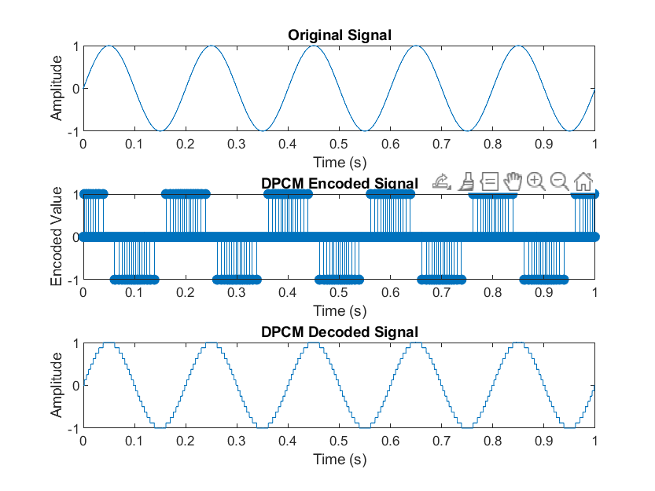
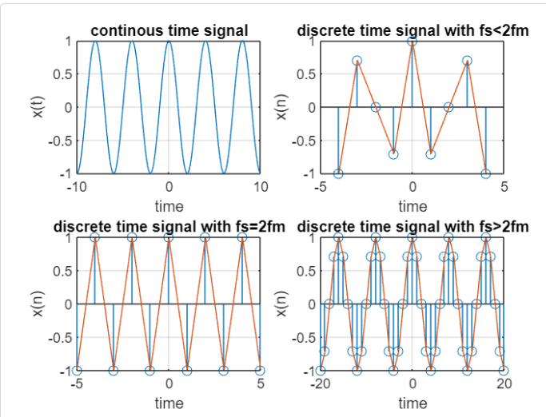
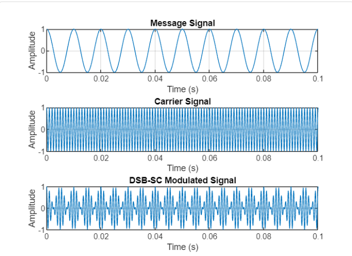
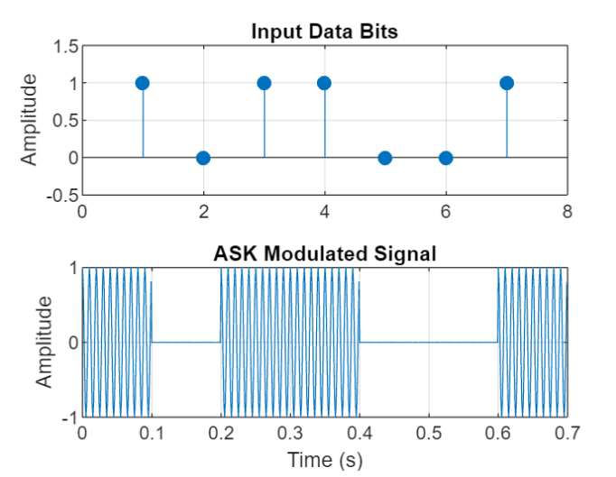
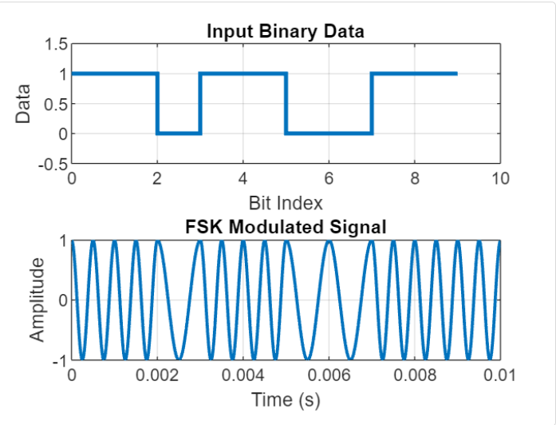
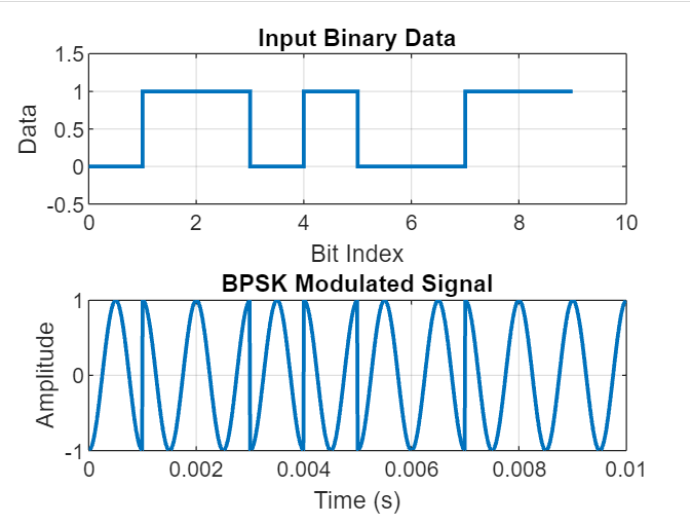

Discover My Academic Journey and Projects of Communication Systems
Discover My Academic Journey and Projects of Communication Systems
In this course, I have developed a strong foundation in analog and
digital communication aspects, such as different types of signal
generation, modulation, and demodulation techniques, and how signals
are transmitted.
Matlab code simulations for visulaizing differnet signals.
Real-Life Example:
Amplitude Modulation (AM) is commonly used in AM radio broadcasting,
where audio signals are transmitted over long distances by
modulating a carrier wave. It is also used in early aviation
communications.
Simulation of Amplitude Modulation (AM) using MATLAB:

Description:
Frequency Modulation (FM) is a
method of modulating a carrier signal where the instantaneous
frequency of the carrier varies in proportion to the amplitude of
the modulating signal. FM is widely used in communication systems
due to its resilience to noise and improved signal quality.
Simulation of Frequency Modulation (FM) using MATLAB:

Description:
PCM is a digital modulation
technique where an analog signal is sampled at regular intervals,
quantized to the nearest level within a range, and encoded into
binary form. The process involves:
● Sampling: The continuous-time signal is sampled at a specific
frequency (e.g., 4kHz or 8kHz) according to the Nyquist criterion.
● Quantization: The amplitude of the sampled signal is approximated
to the nearest quantization level.
● Encoding: The quantized levels are converted into binary codes for
digital transmission or storage.
Simulation of PCM using MATLAB:

Description:
● DPCM is an enhanced version of
PCM that reduces redundancy by encoding the difference between
consecutive samples rather than the absolute sample values.
● Encoding: The predictor estimates the current sample using
previous samples, and the difference (error) is quantized and
encoded.
● Decoding: The difference is added back to the predictor value to
reconstruct the original signal.
Simulation of DPCM using MATLAB:

Real-Life Example:
To maintain sound quality in music recordings.
Sampling
process applicable in the conversion of analog to discrete form.
Speech recognition systems and pattern recognition systems.
Modulation and demodulation systems In sensor data evaluation
systems Radar and radio navigation system sampling is applicable.
Digital watermarking and biometric identification systems,
surveillance systems.
Simulation of Sampling Theorem using MATLAB:

Real-Life Example:
Double Sideband Suppressed
Carrier (DSB-SC) is a type of amplitude modulation (AM) where the
carrier component is suppressed, leaving only the sidebands in the
transmitted signal. This improves power efficiency, as no energy is
spent on transmitting the carrier.
Simulation of DSBSC using MATLAB:

Real-Life Example:
● ASK is a digital
modulation technique where the amplitude of the carrier signal is
varied in accordance with the binary data (0s and 1s) of the
modulating signal.
● Binary '1': The carrier signal is transmitted at its original
amplitude.
● Binary '0': The carrier signal is turned off or transmitted with
zero/minimal amplitude.
● Mathematically, the ASK signal is represented as: s(t)=
Ac*cos*(2πfct), for binary “1”.
s(t)=0 , for binary “0”.
Simulation of ASK using MATLAB:

Real-Life Example:
●Frequency Shift Keying
(FSK) is a digital modulation technique where the frequency of the
carrier signal is varied based on the binary message signal.
● Binary Representation:
o Binary '1' is transmitted using a high-frequency carrier (f1).
o Binary '0' is transmitted using a low-frequency carrier (f2).
● Modulation Process: The binary message signal modulates the
carrier frequency. For m(t)=1, the carrier signal is
s(t)=A*cos*(2πf1t) and for m(t)=0, it is s(t)=A*cos*(2πf2t).
●
Demodulation Process: The received FSK signal is demodulated by
separating the two frequencies using band-pass filters tuned to f1
and f2. The signal power is measured in each band, and a decision
threshold determines the binary output.
Simulation of FSK using MATLAB:

Real-Life Example:
●Phase Shift Keying (PSK)
is a digital modulation technique where the phase of the carrier
signal is varied based on the binary message signal.
● Binary
Representation:
o Binary '1' is transmitted with a carrier signal having a phase of
0∘0^\circ0∘.
o Binary '0' is transmitted with a carrier signal
having a phase of 180∘180^\circ180∘.
● Modulation Process: The binary message signal modulates the phase
of the carrier signal. For m(t)=1, the modulated signal is
s(t)=Ac*cos*(2πfct) and m(t)=0, it is s(t)=−Ac*cos*(2πfct).
● Demodulation Process: The received PSK signal is demodulated by
correlating it with a reference carrier signal. The resulting signal
is integrated over the bit duration. A decision threshold is
applied:
o Positive values correspond to binary '1'.
o Negative values
correspond to binary '0'.
Simulation of PSK using MATLAB:
